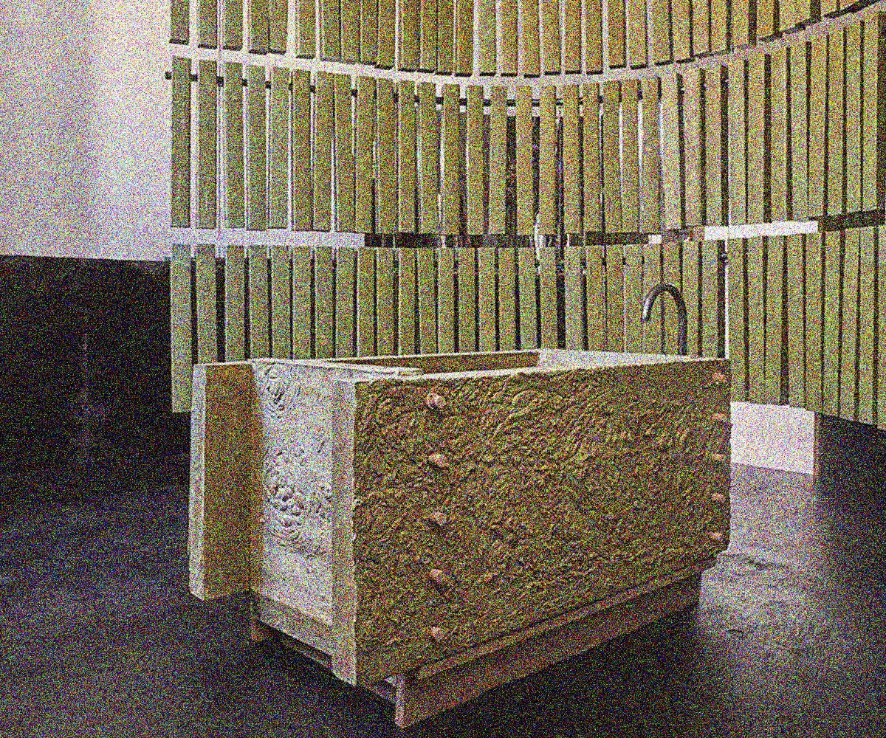
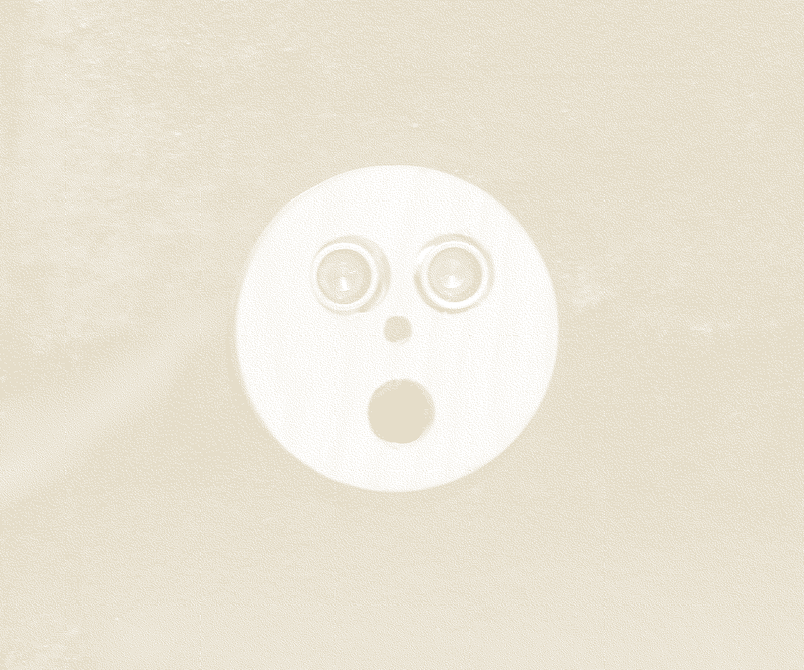

CIGALES


Cigales est une installation sonore prenant place dans le projet Zou Maë lors de la Design Parade Toulon 2019. Des bruitages de cigales ont été enregistrés puis diffusés en boucle dans la pièce. Trois capteurs à ultrason modulent le volume sonore en fonction de la position des visiteurs.